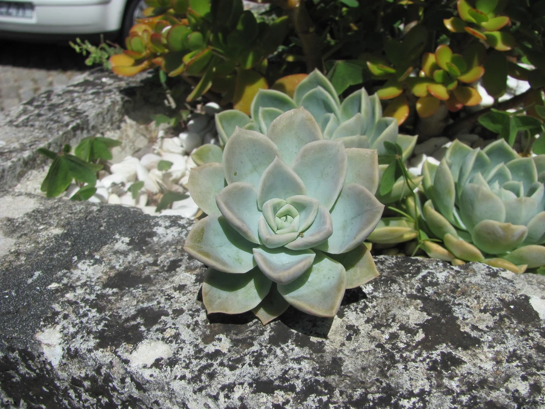

多肉植物 · 植物界
胧月 Graptopetalum paraguayense

景天科风车草属多年生多肉，叶片灰紫带白粉，易群生垂吊，叶插繁殖极容易，原产墨西哥，是新手入门多肉。
- 分类
- 门被子植物门纲木兰纲目虎耳草目科景天科属风车草属
- 栖息环境
- 墨西哥的干旱山地岩石缝隙，喜光、干燥、通风
- 地理分布
- 原产墨西哥，世界各地广泛盆栽
- 保护级别
- 暂无评估
物种志
胧月为景天科风车草属多年生肉质草本，株高 10–30 厘米，茎匍匐或斜升，老茎木质化后呈垂吊状。叶片卵形，肉质肥厚，灰绿色至灰紫色，表面覆一层白粉，螺旋状排列成松散的莲座。花星形，白色或淡黄色，花期春季；果实为蓇葖果。
胧月原产墨西哥，喜阳光充足、凉爽干燥和通风良好的环境，耐旱怕积水，夏季高温时生长缓慢。它叶片表面的白粉可反射强光、减少水分蒸发；光照充足、温差大时叶色泛紫红。胧月叶插极容易，叶片掉落土面就能生根发芽，常被用作多肉拼盘的材料，垂吊栽培时可形成瀑布状株形；光照越足、温差越大，叶色越紫红，十分耐看；秋季可适当减少浇水。
形态与习性
- 株高10–30 厘米，茎匍匐或垂吊
- 花期春季，花星形，白色或淡黄
- 果期花后结蓇葖果
- 光照喜充足阳光，夏季适度遮阴
- 水分耐旱，盆土干透再浇
- 土壤颗粒为主、排水良好的矿质土
- 繁殖叶插、枝插
- 主要用途多肉拼盘、垂吊盆栽、庭院点缀
趣味知识
- 胧月叶片覆盖白粉，光照充足、温差大时会泛出紫红色。
- 它的叶插极容易，掉落的叶片落在土面上就能生根发芽。
- 胧月老茎木质化后可养成垂吊桩，枝条像瀑布一样垂下。
- 它原产墨西哥，种加词却意为“巴拉圭的”，是早期命名留下的误会。